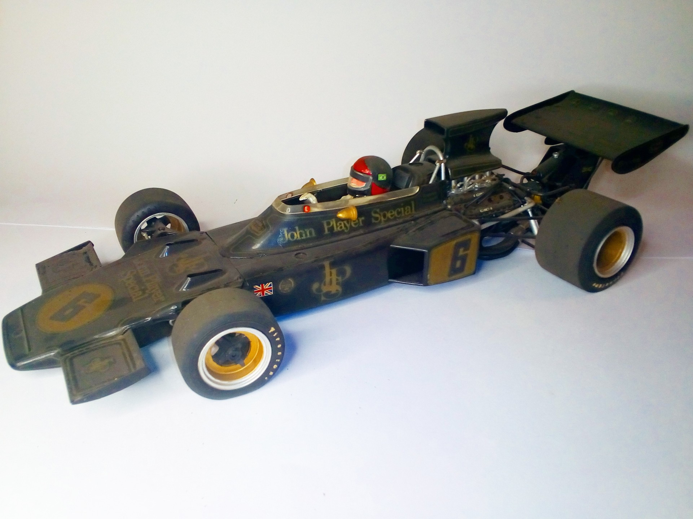

Auto e veicoli stradali · scale model archive
Lotus 72D driver Emerson Fittipaldi
Lotus 72D driver Emerson Fittipaldi — Kit: Tamiya, Scale: 1/12. Worls champion in 1972. Possibly the best Formula 1 ever, raced from 1970 to 1975. 2…

Photo gallery
English description
Worls champion in 1972. Possibly the best Formula 1 ever, raced from 1970 to 1975. 2 Driver's world championships and 3 Constructor´s World chamionships won. In 1975 she was even still first for a few laps in Monaco GP.
#1/12 #Tamiya
Descrizione italiana
Worls campione in 1972. Possibly il best Formula 1 ever, corse da 1970 una 1975. 2 Pilota's Campionato del Mondos e 3 Constructor's World chamionships won. In 1975 she fu even still primo per una few laps in Monaco GP.